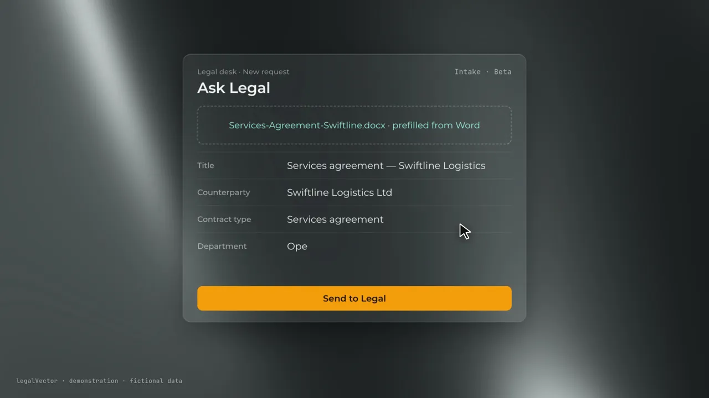

Your Legal departmentisn’t an inbox.
Every legal request deserves a clear process.
Give every department one place to submit legal requests, while your Legal team gains visibility, structured triage and control over every matter, directly on your existing document repository.

Product film. Demonstration with fictional data; real legalVector functions.
Where does a legal request live today?
- In an email threadForwarded, replied to and buried, with nobody sure which message is the request.
- In a Word attachmentVersion seven, final, final two. The reviewed copy is wherever someone saved it.
- In a spreadsheetStatus, owner and due date, updated when someone remembers.
- In one person’s headUntil they are on holiday, and the business asks Legal where things stand.
Before and after one front door.
Drag the line. On the left, how requests reach Legal today. On the right, the legalVector Legal inbox: every request numbered, owned and visible.

Watch it in 30 seconds.
The request fills itself from the Word file.
The requester drops the document. Title, counterparty and contract type come from it, so Legal receives a structured request instead of a forwarded thread.
- Queues by roleEach request lands in the right Legal queue.
- Visible ownershipA suggested lawyer for every request, with each lawyer’s workload in view.

How it works.
- Drop the Word fileAny department submits through one Legal front door.
- AI reads it firstBefore a lawyer opens it, the draft is checked against your playbook.
- Triage in one clickThe Head of Legal assigns it, with every workload in view.
- Tracked to the endStatus, assignee and due date are stored as fields on the document.
Your repository stays the system of record.
legalVector is the Legal workspace on top. Documents, versions, metadata and permissions stay governed by the repository you already run.
Alfresco Content ServicesDoxis 4
Built for governance, not around it.
Official APIs only. Every call goes through the repository’s official interface, with the signed-in user’s own rights. No second permission model.
AI keys stay on the server. Requesters only see their own requests; internal reviews stay internal.
Lawyers decide. A failing clause does not pass on its own. Accepted deviations need a recorded reason.
Five languages. English, Spanish, European Portuguese, French and Arabic, with a right-to-left layout.
See your requests in one place.
30 minutes with the team, on the repository you run: the Legal front door, triage and ownership, with a request like yours.
Questions Legal teams ask.
- Is request intake production-ready?
- Request intake is in beta today. The walkthrough shows what it does now on your repository type.
- Can it collect requests from our Legal mailbox?
- Not in production. Requesters use the Legal front door; a local mailbox can prepare a draft that the sender then submits.
- Do we have to move our documents?
- No. legalVector runs on Alfresco Content Services or Doxis 4. Documents, versions and permissions stay in your repository.
- Who can see a request?
- Each request is private to its requester and Legal. Repository calls run as the signed-in user, with that user’s own rights.
- Does the AI decide?
- No. It reads and proposes. Lawyers decide, and accepted deviations need a recorded reason.
- What happens in the walkthrough?
- 30 minutes with the team, on your repository type. Bring a real request type and your questions on deployment.